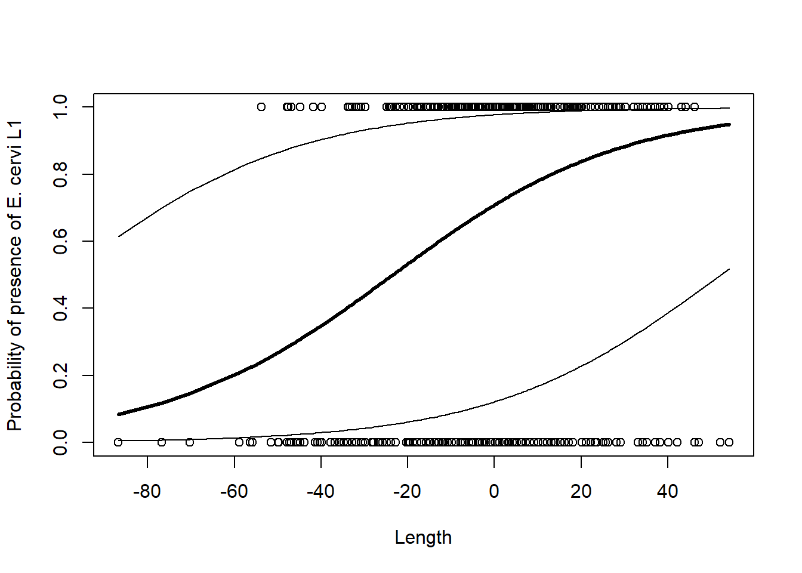

-> Hirschparasitenbeispiel aus Kapitel 13 von Zuur et al. (2009)
# Daten laden und für GLMM aufbereitenDeerEcervi <-read.delim("datasets/stat5-8/DeerEcervi.txt", sep ="", stringsAsFactors =TRUE)# Daten anschauenhead(DeerEcervi)## Farm Sex Length Ecervi## 1 AL 2 164 0.00## 2 AL 1 216 0.00## 3 AL 1 208 0.00## 4 AL 1 206 14.37## 5 AL 1 204 0.00## 6 AL 1 200 0.00summary(DeerEcervi)## Farm Sex Length Ecervi ## MO :209 Min. :1.000 Min. : 75.0 Min. : 0.00 ## CB : 85 1st Qu.:1.000 1st Qu.:151.0 1st Qu.: 0.00 ## QM : 60 Median :1.000 Median :163.0 Median : 6.60 ## BA : 50 Mean :1.458 Mean :161.8 Mean : 45.42 ## PN : 37 3rd Qu.:2.000 3rd Qu.:174.9 3rd Qu.: 35.79 ## MB : 34 Max. :2.000 Max. :216.0 Max. :2186.60 ## (Other):351# Anzahl Larven hier in Presence/Absence übersetztDeerEcervi$Ecervi.01<- DeerEcervi$EcerviDeerEcervi$Ecervi.01[DeerEcervi$Ecervi >0] <-1# Numerische Geschlechtscodierung als FactorDeerEcervi$fSex <-as.factor(DeerEcervi$Sex)# Hischlänge standardisierenDeerEcervi$CLength <- DeerEcervi$Length -mean(DeerEcervi$Length)
-> Nun sind die Daten bereit:
Die Parasitenbefalldaten wurden in Parasiten Präsenz/Absenz (1/0) übersetzt.
Die Hirschlänge wurde standardisiert, damit der Achsenabschnitt (intercept) des Modells interpretierbar ist, standardisierte entspricht nun der Achsenabschnitt einem durschnittlich langen Hirsch.
# glmmlibrary("MASS")DE.PQL <-glmmPQL(Ecervi.01~ CLength * fSex,random =~1| Farm, family = binomial, data = DeerEcervi)summary(DE.PQL)## Linear mixed-effects model fit by maximum likelihood## Data: DeerEcervi ## AIC BIC logLik## NA NA NA## ## Random effects:## Formula: ~1 | Farm## (Intercept) Residual## StdDev: 1.462108 0.9620576## ## Variance function:## Structure: fixed weights## Formula: ~invwt ## Fixed effects: Ecervi.01 ~ CLength * fSex ## Value Std.Error DF t-value p-value## (Intercept) 0.8883697 0.3373283 799 2.633547 0.0086## CLength 0.0378608 0.0065269 799 5.800768 0.0000## fSex2 0.6104570 0.2137293 799 2.856216 0.0044## CLength:fSex2 0.0350666 0.0108558 799 3.230228 0.0013## Correlation: ## (Intr) CLngth fSex2 ## CLength -0.108 ## fSex2 -0.191 0.230 ## CLength:fSex2 0.092 -0.522 0.235## ## Standardized Within-Group Residuals:## Min Q1 Med Q3 Max ## -6.3466592 -0.6387839 0.2978382 0.5218829 3.4912879 ## ## Number of Observations: 826## Number of Groups: 24# Modellvoraussagen berechneng <-0.8883697+0.0378608* DeerEcervi$CLength# Rücktransformieren aus Logitp.averageFarm1 <-exp(g) / (1+exp(g))# Sortierung der Hirschgrössen für's PlottenI <-order(DeerEcervi$CLength)# Plottenplot(DeerEcervi$CLength, DeerEcervi$Ecervi.01,xlab ="Length",ylab ="Probability of presence of E. cervi L1")lines(DeerEcervi$CLength[I], p.averageFarm1[I], lwd =3)# Vertrauensintervalle (CI) mit SD von Random factor berechnen# Generell CI = mean + 1.96*SDp.Upp <-exp(g +1.96*1.462108) / (1+exp(g +1.96*1.462108))p.Low <-exp(g -1.96*1.462108) / (1+exp(g -1.96*1.462108))lines(DeerEcervi$CLength[I], p.Upp[I])lines(DeerEcervi$CLength[I], p.Low[I])

# Dasselbe mit dem lme4-Packagelibrary("lme4")DE.lme4 <-glmer(Ecervi.01~ CLength * fSex + (1| Farm),family = binomial, data = DeerEcervi)summary(DE.lme4)## Generalized linear mixed model fit by maximum likelihood (Laplace## Approximation) [glmerMod]## Family: binomial ( logit )## Formula: Ecervi.01 ~ CLength * fSex + (1 | Farm)## Data: DeerEcervi## ## AIC BIC logLik deviance df.resid ## 832.6 856.1 -411.3 822.6 821 ## ## Scaled residuals: ## Min 1Q Median 3Q Max ## -6.2678 -0.6090 0.2809 0.5022 3.4546 ## ## Random effects:## Groups Name Variance Std.Dev.## Farm (Intercept) 2.391 1.546 ## Number of obs: 826, groups: Farm, 24## ## Fixed effects:## Estimate Std. Error z value Pr(>|z|) ## (Intercept) 0.938969 0.356004 2.638 0.00835 ** ## CLength 0.038964 0.006917 5.633 1.77e-08 ***## fSex2 0.624487 0.222938 2.801 0.00509 ** ## CLength:fSex2 0.035859 0.011409 3.143 0.00167 ** ## ---## Signif. codes: 0 '***' 0.001 '**' 0.01 '*' 0.05 '.' 0.1 ' ' 1## ## Correlation of Fixed Effects:## (Intr) CLngth fSex2 ## CLength -0.107 ## fSex2 -0.189 0.238 ## CLngth:fSx2 0.091 -0.514 0.232library("glmmML")DE.glmmML <-glmmML(Ecervi.01~ CLength * fSex,cluster = Farm, family = binomial, data = DeerEcervi)summary(DE.glmmML)## ## Call: glmmML(formula = Ecervi.01 ~ CLength * fSex, family = binomial, data = DeerEcervi, cluster = Farm) ## ## ## coef se(coef) z Pr(>|z|)## (Intercept) 0.93968 0.357915 2.625 8.65e-03## CLength 0.03898 0.006956 5.604 2.10e-08## fSex2 0.62451 0.224251 2.785 5.35e-03## CLength:fSex2 0.03586 0.011437 3.135 1.72e-03## ## Scale parameter in mixing distribution: 1.547 gaussian ## Std. Error: 0.2975 ## ## LR p-value for H_0: sigma = 0: 1.346e-41 ## ## Residual deviance: 822.6 on 821 degrees of freedom AIC: 832.6
Quellcode
---date: 2023-11-13lesson: Stat5thema: Von linearen Modellen zu GLMMsindex: 1format: html: code-tools: source: true---# Stat5: Demo- Download dieses Demoscript via "\</\>Code" (oben rechts)- Datensatz *spf.csv*- Datensatz *DeerEcervi.txt*## Split-plot ANOVAReaktionszeitenbeispiel aus Kapitel 14 von Logan (2010) ```{r}# Daten ladenspf <-read.delim("datasets/stat5-8/spf.csv", sep =";")# Daten anschauenhead(spf)# LM mit random intercept = einfaches LMMspf.aov <-aov(Reaktion ~ Signal * Messung +Error(VP), data = spf)summary(spf.aov)# Interaktion anschaueninteraction.plot(spf$Messung, spf$Signal, spf$Reaktion)# Nun als LMMlibrary("nlme")# Mit random intercept (VP) und random slope (Messung)spf.lme.1<-lme(Reaktion ~ Signal * Messung, random =~ Messung | VP, data = spf)# Nur random interceptspf.lme.2<-lme(Reaktion ~ Signal * Messung, random =~1| VP, data = spf)# Modelle anschauenanova(spf.lme.1)anova(spf.lme.2)summary(spf.lme.1)summary(spf.lme.2)```## GLMM-> Hirschparasitenbeispiel aus Kapitel 13 von Zuur et al. (2009)```{r}# Daten laden und für GLMM aufbereitenDeerEcervi <-read.delim("datasets/stat5-8/DeerEcervi.txt", sep ="", stringsAsFactors =TRUE)# Daten anschauenhead(DeerEcervi)summary(DeerEcervi)# Anzahl Larven hier in Presence/Absence übersetztDeerEcervi$Ecervi.01<- DeerEcervi$EcerviDeerEcervi$Ecervi.01[DeerEcervi$Ecervi >0] <-1# Numerische Geschlechtscodierung als FactorDeerEcervi$fSex <-as.factor(DeerEcervi$Sex)# Hischlänge standardisierenDeerEcervi$CLength <- DeerEcervi$Length -mean(DeerEcervi$Length)```-> Nun sind die Daten bereit:- Die Parasitenbefalldaten wurden in Parasiten Präsenz/Absenz (1/0) übersetzt.- Die Hirschlänge wurde standardisiert, damit der Achsenabschnitt (intercept) des Modells interpretierbar ist, standardisierte entspricht nun der Achsenabschnitt einem durschnittlich langen Hirsch.```{r}# Zunächst als GLM# Interaktionen mit fFarm nicht berücksichtigt, da zu viele Freiheitsgrade verbraucht würdenDE.glm <-glm(Ecervi.01~ CLength * fSex + Farm, family = binomial, data = DeerEcervi)drop1(DE.glm, test ="Chi")summary(DE.glm)anova(DE.glm)# Response curves für die einzelnen Farmen (Weibliche Tiere: fSex = "1" )plot(DeerEcervi$CLength, DeerEcervi$Ecervi.01,xlab ="Length", ylab ="Probability of \ presence of E. cervi L1")I <-order(DeerEcervi$CLength)AllFarms <-unique(DeerEcervi$Farm)for (j in AllFarms) { mydata <-data.frame(CLength = DeerEcervi$CLength, fSex ="1",Farm = j ) n <-dim(mydata)[1]if (n >10) { P.DE2 <-predict(DE.glm, mydata, type ="response")lines(mydata$CLength[I], P.DE2[I]) }}# glmmlibrary("MASS")DE.PQL <-glmmPQL(Ecervi.01~ CLength * fSex,random =~1| Farm, family = binomial, data = DeerEcervi)summary(DE.PQL)# Modellvoraussagen berechneng <-0.8883697+0.0378608* DeerEcervi$CLength# Rücktransformieren aus Logitp.averageFarm1 <-exp(g) / (1+exp(g))# Sortierung der Hirschgrössen für's PlottenI <-order(DeerEcervi$CLength)# Plottenplot(DeerEcervi$CLength, DeerEcervi$Ecervi.01,xlab ="Length",ylab ="Probability of presence of E. cervi L1")lines(DeerEcervi$CLength[I], p.averageFarm1[I], lwd =3)# Vertrauensintervalle (CI) mit SD von Random factor berechnen# Generell CI = mean + 1.96*SDp.Upp <-exp(g +1.96*1.462108) / (1+exp(g +1.96*1.462108))p.Low <-exp(g -1.96*1.462108) / (1+exp(g -1.96*1.462108))lines(DeerEcervi$CLength[I], p.Upp[I])lines(DeerEcervi$CLength[I], p.Low[I])# Dasselbe mit dem lme4-Packagelibrary("lme4")DE.lme4 <-glmer(Ecervi.01~ CLength * fSex + (1| Farm),family = binomial, data = DeerEcervi)summary(DE.lme4)library("glmmML")DE.glmmML <-glmmML(Ecervi.01~ CLength * fSex,cluster = Farm, family = binomial, data = DeerEcervi)summary(DE.glmmML)```